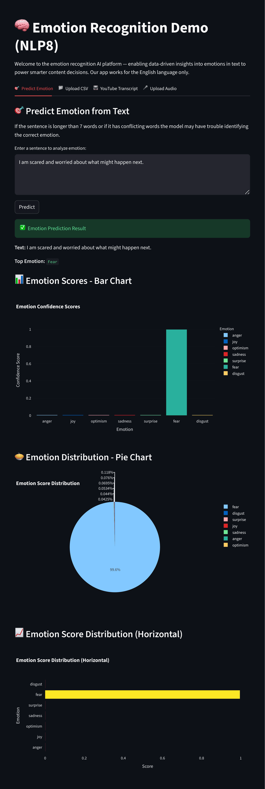
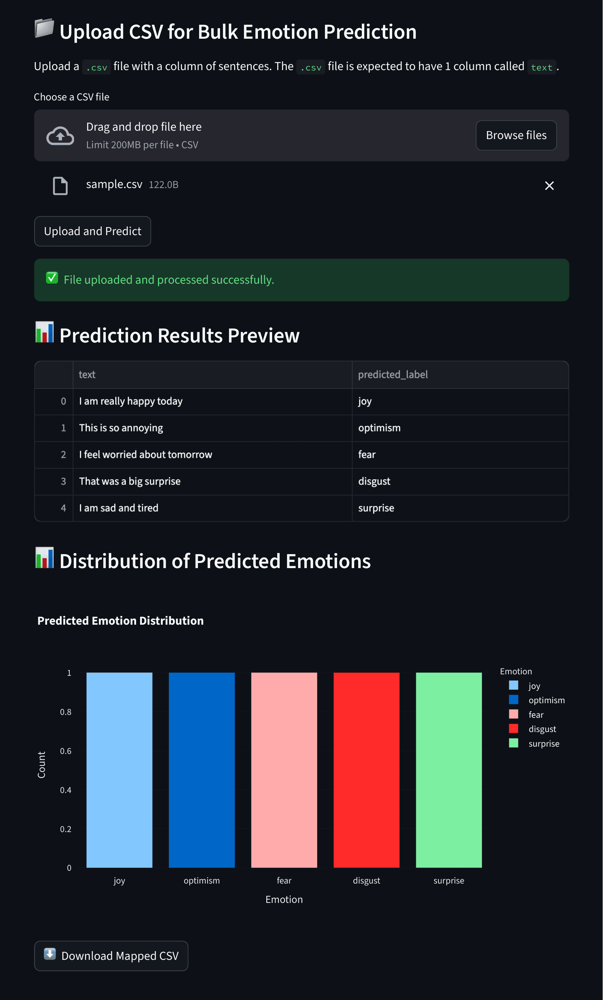
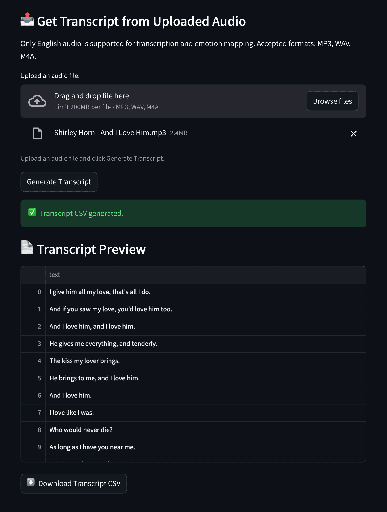
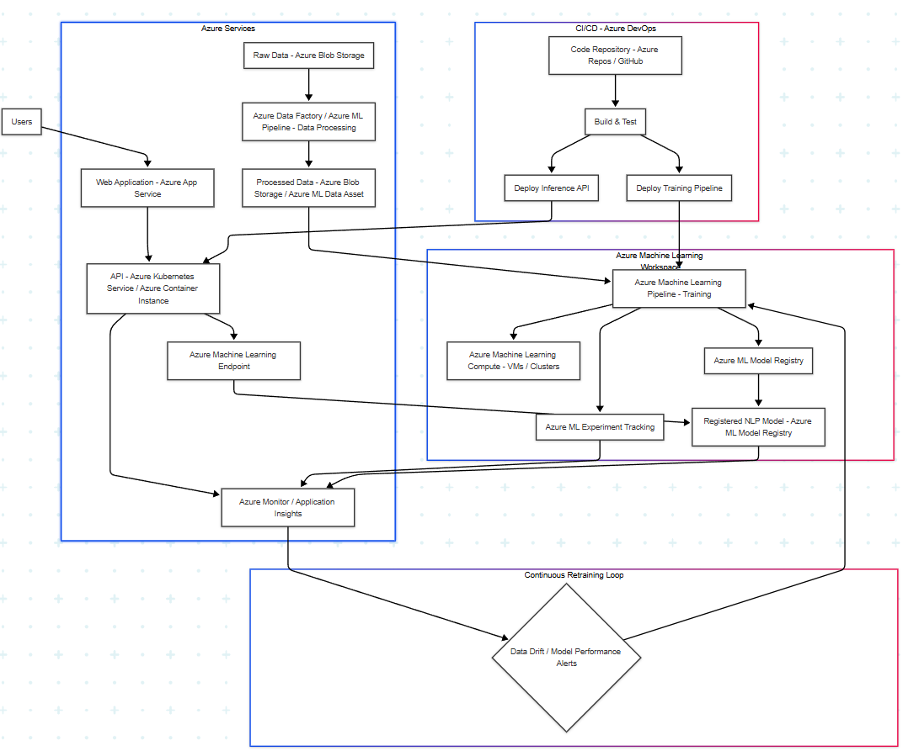

Turning a fine-tuned classifier into a deployable, maintainable service — FastAPI backend, Docker, Streamlit demo, and a full Azure ML retraining pipeline from feedback to conditional deployment.

Most ML projects end at the notebook. You have a model that scores well on a test set — and then it just sits there. The real challenge is making it useful: something you can deploy, update with new data, and trust to behave predictably in production.
This project took an existing emotion classifier (DistilRoBERTa fine-tuned on Russian speech transcripts) and built the full production wrapper around it. The goal wasn't to improve the model — it was to make it deployable, testable, and maintainable.
The result: a Dockerized API anyone on the team can run with one command, a Streamlit UI for demos, and an Azure ML pipeline that handles the full retraining cycle automatically.


The service has two deployment targets. Locally via Docker Compose — one command builds and starts both API and Streamlit. In the cloud via Azure ML — a pipeline that can be triggered on new feedback data.
The Azure ML pipeline handles the complete retraining cycle. New feedback merges into the dataset, the model retrains, metrics are compared against the current production model, and deployment only happens if the new model actually wins.
The conditional deploy step is the important part — it prevents the common failure mode where a new training run ships a worse model to production because no one checked.

A practical stack chosen for deployability, not novelty. Everything that runs locally also runs in the cloud with minimal configuration changes.
Complete source, Docker setup, Azure ML pipeline definition, and pytest tests — all on GitHub.